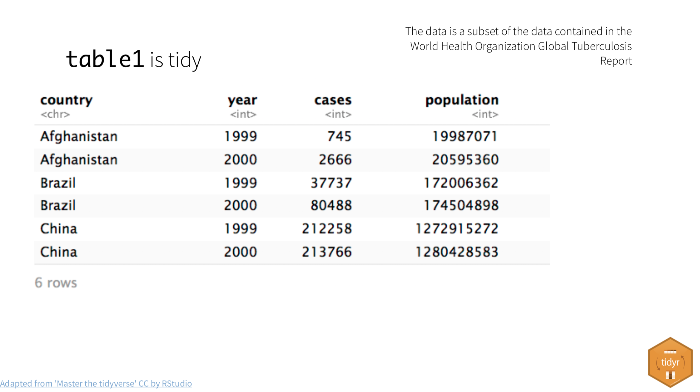
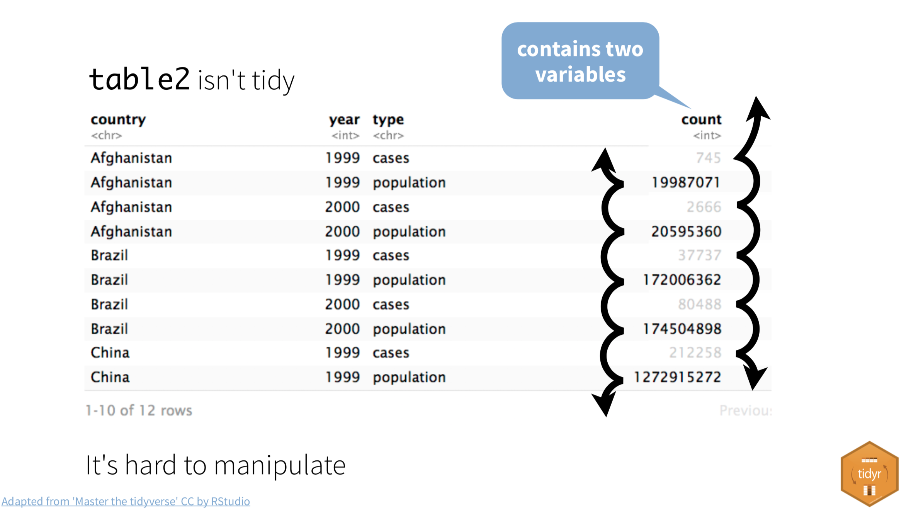
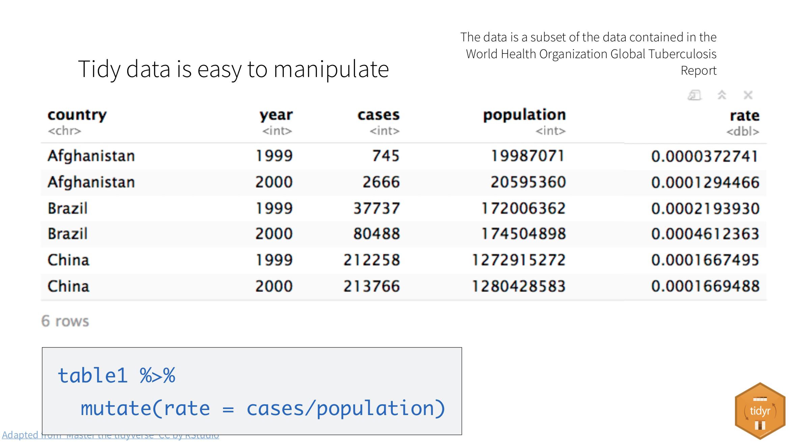
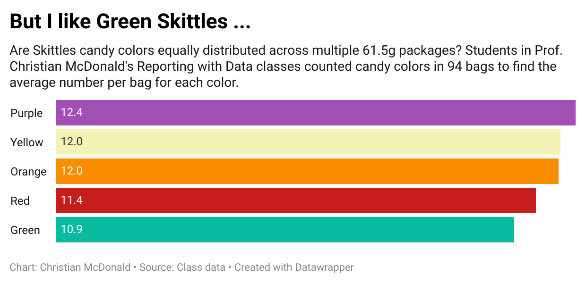
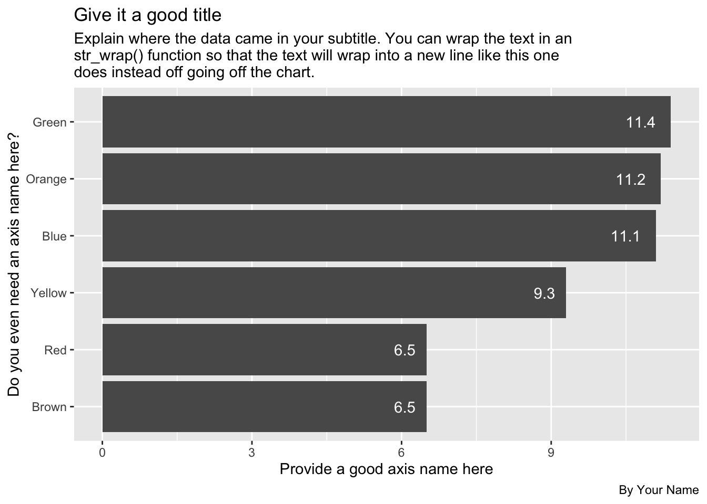

Warning: package 'ggplot2' was built under R version 4.3.19 Tidy data
Data “shape” can be important when you are trying to work with and visualize data. In this chapter we’ll discuss “tidy data” and how it helps us with both ggplot and other charting tools like Datawrapper.
9.1 Goals for this section
- Explore what it means to have “tidy” data.
- Learn about and use
pivot_longer(),pivot_wider()to shape our data for different purposes. - Use candy data to practice shaping data.
9.2 The questions we’ll answer
- Are candy colors evenly distributed within a standard package of M&M’s? (i.e., average per color in a standard package)
- We’ll plot the result as a column chart to show the average number of colored candies. We’ll do it first in ggplot, then Datawrapper.
- Bonus 1: Who got the most candies in their bag?
- Bonus 2: What is the average number of candy in a bag?
9.3 What is tidy data
“Tidy” data is well formatted so each variable is in a column, each observation is in a row and each value is a cell. Our first step in working with any data is to make sure we are “tidy”.

It’s easiest to see the difference through examples. The data frame below is of tuberculosis reports from the World Health Organization.
- Each row is a set of observations (or case) from a single country for a single year.
- Each column describes a unique variable. The year, the number of cases and the population of the country at that time.

Table2 below isn’t tidy. The count column contains two different type of values.

When our data is tidy, it is easy to manipulate. We can use functions like mutate() to calculate new values for each case.

When our data is tidy, we can use the tidyr package to reshape the layout of our data to suit our needs. It gets loaded with library(tidyverse) so we won’t need to load it separately.
9.3.1 Wide vs long data
In the figure below, the table on the left is “wide”. There are are multiple year columns describing the same variable. It might be useful if we want to calculate the difference of the values for two different years. It’s less useful if we want plot on a graphic because we don’t have a single “year” column to map as an x or y axes.
The table on the right is “long”, in that each column describes a single variable. It is this shape we need when we want to plot values on a chart in ggplot. We can then set our “Year” column as an x-axis, our “n” column on our y-axis, and group by the “Country”.

Neither shape is wrong, they are just useful for different purposes. In fact, you’ll find yourself pivoting the same data in different ways depending on your needs.
9.3.2 Why we might want different shaped data
There are a myriad of reasons why you might need to reshape your data. Performing calculations on row-level data might be easier if it is wide. Grouping and summarizing calculations might be easier when it is long. ggplot graphics like long data, while Datawrapper sometimes wants wide data to make the same chart.
I find myself shaping data back and forth depending on my needs.
9.4 The candy project
Let’s visualize our goal here before we jump into the candy bowl.
Our first question is this: Are there equal numbers of different-colored candies in a bag of M&M’s?
To visually communicate this, we’ll build a chart similar to this one (though this one is about Skittles instead of M&M’s.)

We’ll build this chart in both ggplot and Datawrapper.
9.4.1 Prepare our candy project
We will use candy count data we’ve been collected in Reporting wth Data classes to explore this subject.
Start a new project.
- Create a new project and call it:
yourname-candy - No need to create data folders as we’ll just load data directly into the notebook.
- You can use your
index.qmdfile … just change the title to “Tidy data: Candy”. - Create your setup block and load the
tidyverseandjanitor.
9.4.2 Get the data
We’ll just load this data directly from Google Sheets into this notebook.
- Add a Markdown section noting that you are importing data.
- Add this import chunk and run it.
candy_raw <- read_csv("https://docs.google.com/spreadsheets/d/e/2PACX-1vRCGayKLOy-52gKmEoPOj3ZKnOQVtCiooSloiCr-i_ci27e4n1CMPL0Z9s6MeFX9oQuN9E-HCFJnWjD/pub?gid=1456715839&single=true&output=csv") |> clean_names()
# peek at the data
candy_rawThis data comes from a Google Sheets document fed by a form that students have filled out, counting the colors of candies in a standard size bag of plain M&Ms.
9.4.3 Drop unneeded columns
For this exercise we don’t need the timestamp, candy_type or box_code columns. We’ll drop them so we can keep things simple.
- Create new section noting you’ll drop unneeded columns.
- Create an R chunk and use
select()to remove the columns noted above and save the result into a new data frame calledcandy. Remember you can negate a list of columns like this:!c(col1, col2).
You’ve done this in the past, so you should be able to do it on your own.
You got this! (But, just in case …)
candy <- candy_raw |>
select(!c(timestamp, candy_type, box_code))9.4.4 Peek at the wide table
Let’s take look closer at this data:
candy |> head()This is pretty well-formed data. This format would be useful to create a “total” column for each bag, but there are better ways to do this with long data. Same with getting our averages for each color.
9.4.5 Where are we going with this data
Let’s look at our plotting goal again:
In our chart, we want one axis to have the candy color and the other to have the average number of candy.
To plot a chart like this in ggplot or Datawrapper, the data needs to be the same shape, like this:
| Color | Average |
|---|---|
| Green | 10.9 |
| Orange | 12.0 |
| Purple | 12.4 |
| Red | 11.4 |
| Yellow | 12 |
It will be easier to accomplish both of these tasks if our data were in the long format.
So, instead of this:
| first_name | last_name | red | green | orange | yellow | blue | brown |
|---|---|---|---|---|---|---|---|
| Christian | McDonald | 2 | 17 | 11 | 4 | 16 | 4 |
We want this:
| first_name | last_name | color | candies |
|---|---|---|---|
| Christian | McDonald | red | 2 |
| Christian | McDonald | green | 17 |
| Christian | McDonald | orange | 11 |
| Christian | McDonald | yellow | 4 |
| Christian | McDonald | blue | 16 |
| Christian | McDonald | brown | 4 |
9.5 The tidyr verbs
The two functions we’ll use to reshape are data are:
- pivot_longer() which “lengthens” data, increasing the number of rows and decreasing the number of columns.
- pivot_wider() which “widens” data, increasing the number of columns and decreasing the number of rows.
Again, the best way to learn this is to present a problem and then solve it with explanation.
9.6 Pivot longer
This visualization gives you an idea how pivot_longer() works.

Each column of data chosen (the colored ones) is turned into it’s own row of data. Supporting data (the grey columns) are duplicated.
The pivot_longer() function needs several arguments: cols=, names_to= and values_to. Below are two examples to pivot the example data shown above.

cols=is where you define a range of columns you want to pivot. For our candy data we want the rangered:brown.names_to=allows you to name the new column filled by the column names. For our candy data we want to name this “color” since that’s what those columns described.values_to=allows you to name the new column filled with the cell data. For us we want to call this “count_candies” since these are the number of candies in each bag.
There are a number of ways we can describe the cols= argument … anything in tidy-select works. You can see a bunch of examples here.
9.6.1 Pivot our candy data longer
What we want here is six rows for each person’s entry, with a column for “color” and a column for “count_candies”.
We are using a range, naming the first “red” and the last column “brown” with : in between. This only works because those columns are all together. Otherwise we could list the all with c(red, blue, green) etc.
- Add a note that you are pivoting the data
- Add the chunk below and run it
candy_long <- candy |>
pivot_longer(
1 cols = red:brown,
2 names_to = "color",
3 values_to = "count_candies"
)
candy_long |> head()- 1
- Sets which columns to pivot based on their names.
- 2
- Sets the new column name for the former column names. This would default to “name” if we didn’t set it.
- 3
- Sets the new column name for the former values. This would default to “value” if we didn’t set it.
9.6.2 Get average candies per color
To get the average number of candies per each color, we can use our candy_long data and group_by color (which will consider all the red rows together, etc.) and use summarize() to get the mean.
This is very similar to the sum()s we did with military surplus, but you use mean() instead. One thing you have to watch for with mean() is you might need the argument na.rm = TRUE if there are missing or zero values, since you can’t divide by zero. We’ll include that here in case there are bags that don’t have any of a specific color.
Save the resulting summary table into a new tibble called candy_avg.
candy_avg <- candy_long |>
group_by(color) |>
1 summarize(avg_candies = mean(count_candies, na.rm = TRUE))
candy_avg- 1
- The na.rm hedges our bets in case some bags are missing a color.
9.6.3 Round the averages
Let’s modify this summary to round the averages to tenths so they will plot nicely on our chart.
The round() function needs the column to change, and then the number of digits past the decimal to include.
- Edit your summarize function to add the
mutate()function below.
candy_avg <- candy_long |>
group_by(color) |>
summarize(avg_candies = mean(count_candies, na.rm = TRUE)) |>
mutate(
avg_candies = round(avg_candies, 1)
)
candy_avgBONUS POINT OPPORTUNITY: Using a similar method to rounding above, you can also capitalize the names of the colors. You don’t have to do this, but I’ll give you a bonus point if you do:
- In your mutate, add a rule that updates
colorcolumn usingstr_to_title(color).
You can read more about converting the case of a string here. It’s part of the stringr package, which is loaded with tidyverse.
9.6.4 On your own: Plot the averages
Now I want you to use ggplot to create a bar chart that shows the average number of candies by color in a bag. This is very similar to the Disney Princesses bar chart in Intro to ggplot).
- Build a bar chart of average color using ggplot.
Some things to consider:
- I want the bars to be ordered by the highest average on top.
- I want you to have a good title, subtitle and byline, along with good axes names. Make sure a reader has all the information they need to understand what you are communicating with the chart.
- Include the values on the bars.
- Change the theme to something other than the default.
Here is what it should more or less look like, but with good text, etc:

The numbers in the example above may not be up to date, so don’t let that throw you.
9.7 Introducing Datawrapper
There are some other great charting tools that journalists use. My favorite is Datawrapper and it is free for the level you need it.
Datawrapper is so easy I don’t even have to teach you how to use it. They have excellent tutorials.
What you do need is the data to plot, but you’ve already “shaped” it the way you need it. Your candy_avg tibble is what you need.
Here are the steps I want you to follow:
9.7.1 Review how to make a bar chart
- In a web browser, go to the Datawrapper Academy
- Click on Bar charts
- Choose How to create a bar chart
The first thing to note there is they show you what they expect the data to look like. Your candy_avg tibble is just like this, but with Color and Candies.
You’ll use these directions to create your charts so you might keep this open in its own tab.
9.7.2 Start a chart
- In a new browser tab, go to datawrapper.de and click the big Start creating button.
- Use the Login/Sign Up button along the top to create an account or log in if you have one.
- The first screen you have is where you can Upload data or paste it into the window. We are going to upload the data, but we have to write out the data to your computer first.
9.7.3 Export your data for Datawrapper
- Go back to RStudio.
- Create a new block and name it something about exporting
- Take your data and pipe it into
write_csv(). As an argument to write_csv(), give it a path and name of the file: We can write directly to our project folder ascandy_avg.csv.
candy_avg |> write_csv("candy_avg.csv")This will save your data file onto your computer in your project folder.
9.7.3.1 posit.cloud export
If you are using posit.cloud, you will also need to Export your data from the cloud to get it onto your computer so you can import it into Datawrapper. Do this only if you are using the cloud version.
- In the Files window (bottom right) go inside your
data-processedfolder. - Click on the checkbox next to the
candy_avg.csvfile. - Click on the More blue gear thing and choose Export.
- You’ll get a prompt to name the file (which you can keep the same) and then a download button. Click the button.
- The file should go to your Downloads folder like anything else you download from the Internet.
- When you go back to Datawrapper click on the XLS/CSV upload button and go find your file to import.
9.7.4 Build the datawrapper graphic
- Return to Datawrapper in your browser and click on the XLS/CSV upload button and go find your file to import it.
- Once your data is either uploaded or copied into Datawrapper, you can click Proceed to go to the next step.
You can now follow the Datawrapper Academy directions to finish your chart.
When you get to the Publish & Embed window, I want you to click the Publish Now button and then add the resulting Link to your visualization: URL to your R Notebook so I can find it for grading.
9.8 Pivot wider
Now that you’ve pivoted data longer, I’d also like to show how you can pivot your table into a wide format. I’ll sometimes do this to make an easier to read display or to shape data a specific way for Datawrapper or some other visualization software. Let’s walk through he concept first.
As you can imagine, pivot_wider() does the opposite of pivot_longer(). When we pivot wider we move our data from a “long” format to a “wide” format. We create a new column based categories and values in the data.

pivot_wider() needs two arguments:
names_from =lets us define from which column (or columns) we are pulling values from to create the new column names. In the example above, this would be “V1”.values_from =lets us say which column will be the values in the new arrangement. In the example above this would be “V2”.
So the code to flip the data above would be:
df |>
pivot_wider(names_from = V1, values_from = V2)9.8.1 Pivot wider example
Let’s do this with our data, taking our “long” data and making it “wide” again.
Here is our “long” data:
candy_long… and now we flip it back to having a column for each color:
- 1
-
Within
pivot_wider()we need to tell it from which column to pull the new column headers. i.e., where do we get the “names_from”? - 2
- The second thing it needs to know which variable has the data to fill these new columns. i.e., where do we get the “values_from”?
Let’s practice some more.
9.8.2 Choosing what to flip
Lets create a different look at our data so that we can spin it around in different ways.
When I buy candy for the class, we buy big boxes with many bags in it. There is a “box code” stamped on each package that denotes which box it was packaged in. We’ll re-summarize our data so we get the color averages within each box. I do some other cleanup here, too, to remove bags that came from the wild.
- Create a new section and note you are pivoting wider
- Add a new chunk with the code below and run it
See annotations below the code to explain what is going on, in case you are interested.
1candy_box_color <- candy_raw |>
2 filter(box_code != "130FXWAC0336", box_code != "1524976SE") |>
3 select(!c(timestamp, candy_type)) |>
4 pivot_longer(cols = red:brown, names_to = "candy_color", values_to = "candy_count") |>
5 group_by(box_code, candy_color) |>
6 summarise(avg_candies = mean(candy_count) |> round(1))
candy_box_color- 1
- We create a new object to put everything in, then go back to the original data to get the box code.
- 2
- Removing some rows where there were only one or two bags. Not shown here is the research to find their values.
- 3
-
Removing the
timestampandcandy_typevariables. - 4
- Pivoting the data longer so we can group and summarize.
- 5
- Group by the box and color before we …
- 6
- Summarize to get the average number of candies in each bag, within each box. We also round the result.
OK, now you have a new object called candy_box_color.
Let’s pivot this data to shows a column for each box, which means that is where we draw our “names_from”:
- Add a note that you’ll pivot our new data
- Add the code below and run it
candy_box_color |>
pivot_wider(names_from = box_code, values_from = avg_candies)9.8.3 Pivot wider on your own
Now I want you do apply the same pivot_wider() function to that same candy_box_color data, but to have a column for each color and a row for each box.
- Start a new section and note this is pivot_wider on your own.
- Start with the
candy_box_colordata, and then … - Use
pivot_wider()to make the data shaped like this
| box_code | blue | brown | green | orange | red | yellow |
|---|---|---|---|---|---|---|
| [box name] | # | # | # | # | # | # |
9.9 Bonus questions
More opportunities for bonus points on this assignment. These aren’t plots, just data wrangling to find answers.
9.9.1 Most/least candies
Answer me this: Who got the most candies in their bag? Who got the least?
I want a well-structured section (headline, text) with two chunks, one for the most and one for the least.
9.9.2 Average total candies in a bag
Answer me this: What is the average number of candy in a bag?
Again, well-structured section and include the code.
Hint: You need a total number of candies per person before you can get an average.
9.10 Turn in your work
- Make sure your notebook Renders.
- Publish it to Quarto Publish. Include the published link at the top of your notebook.
- Stuff your project and turn it into the Candy assignment in Canvas.
9.11 What we learned
- We learned what “tidy data” means and why it is important. It is the best shape for data wrangling and plotting.
- We learned about
pivot_longer()andpivot_wider()and we used them to transpose our data. - We also used
round()to round off some numbers, and you might have usedstr_to_title()to change the case of the color values.